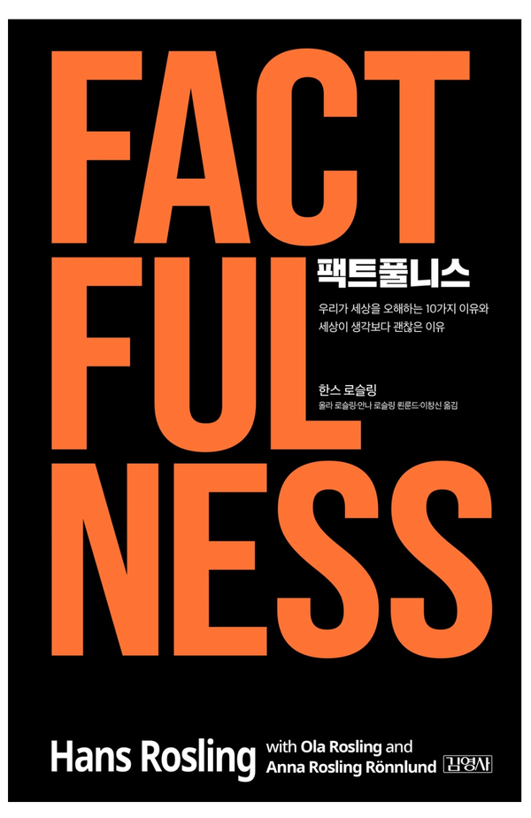

factfulness<한스 로슬링>
전 세계 100만부 돌파! 세계 지성계를 사로잡은 글로벌 베스트셀러 마침내 출간! 강력한 사실을 바탕으로 세상을 정확하게 바라보는 방법을 담은 혁명적 저작 전 세계적으로 확증편향이 기승을 부리는 탈진실의 시대에, 막연한 두려움과 편견을 이기는 팩트의 중요성을 일깨우는 세계적 역작! 세계를 이해하기 위한 13가지 문제에서 인간의 평균 정답률은 16%, 침팬지는 33%. 우리는 왜 침팬지를 이기지 못하는가? 똑똑하고 현명한 사람일수록 세상의 참모습을 정확히 알지 못한다! ‘느낌’을 ‘사실’로 인식하는 인간의 비합리적 본능 10가지를 밝히고, 우리의 착각과 달리 세상이 나날이 진보하고 있음을 명확한 데이터와 통계로 증명한 놀라운 통찰. 세상을 바라보는 방식을 바꾸고 미래의 위기와 기회에 대처하기 위해 반드시 읽어야 할 필독서다. 이 책에서는 다양한 분야들이 다루고 있는데 극빈층의 비율, 여성의 교육기간, 기대 수명, 자연재해 사망자 수 등 최신 통계 데이터를 바탕으로 소개된다. 언론 등에 휘둘리지 않고 정확한 정보를 얻는 것이 얼마나 중요한지 강조하면서 우리가 보편적으로 겪고 있는 부정적인 심리 해결책도 제시했다. 즉 어떤 사건에 대해서 확대해석하거나 관점을 왜곡하지 않는 법을 배우게 될 것이다.